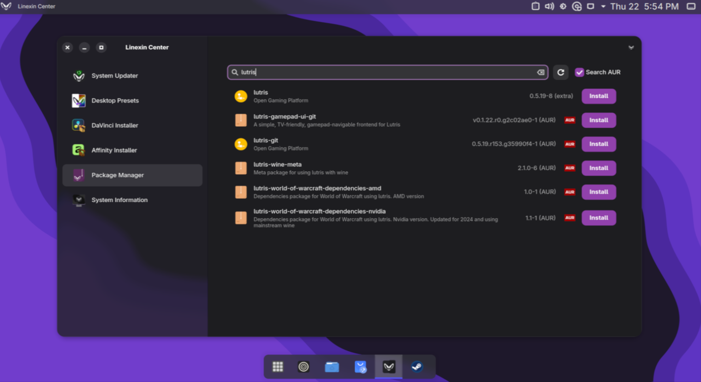
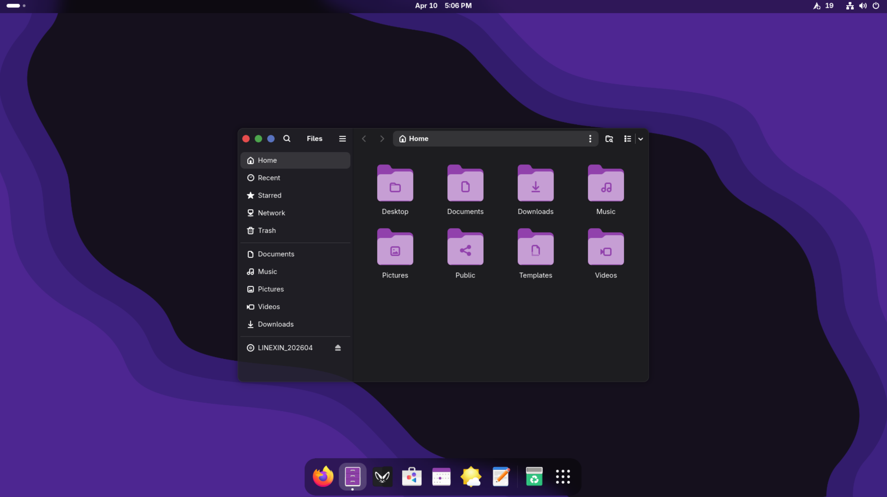
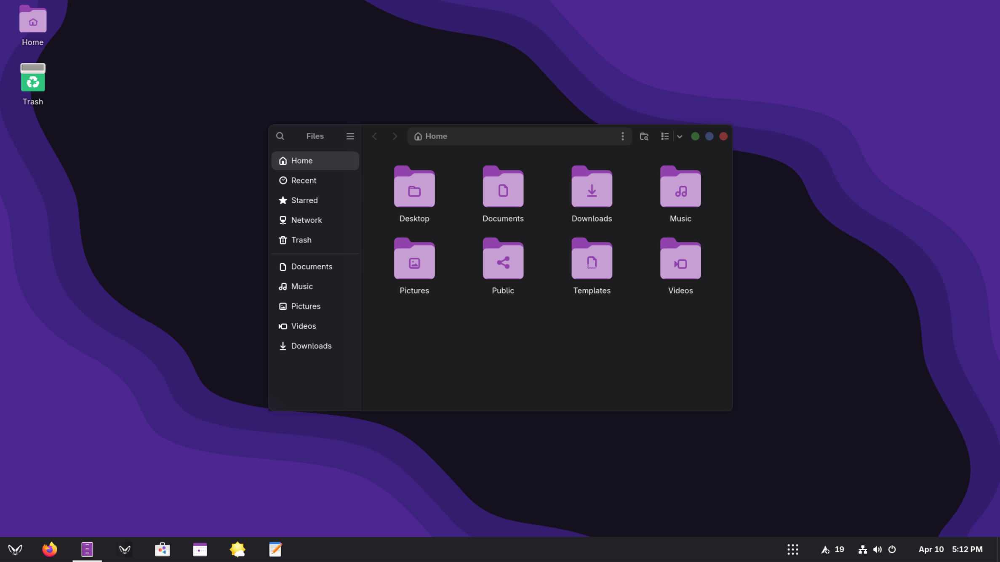
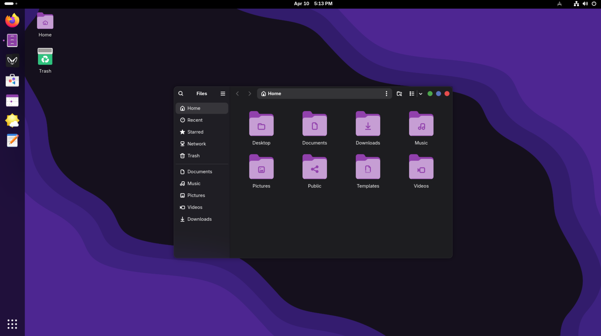
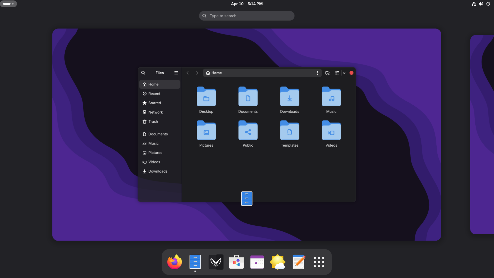

Experience
Computing Freedom
A lightweight Linux distribution that combines elegance with powerful performance. Enjoy a preconfigured Arch-based (btw) distro that is ready out of the box — play your favorite games and easily install creative tools like the Affinity suite or DaVinci Resolve.
Why Choose Linexin?
Everything you need, nothing you don't.
Blazing Fast
Built on a minimal base, Linexin is optimized for speed and responsiveness, booting up in seconds.
Creative Work
With Affinity Installer and DaVinci Installer built-in, you can easily use creative tools after only a couple of clicks.
Gaming Ready
Comes pre-packaged with Steam, gamescope and gamemode that can boost your gaming performance.
Flatpak & AppImage
Flatpak and AppImage support works out of the box.
Two Desktops
Pick the GNOME-based Linexin Desktop or the KDE Plasma-based Kinexin Desktop during installation — both come beautifully pre-configured.
Always Up To Date
Powered by Arch Linux's rolling release model, you get the newest kernels, drivers and software as soon as they're released.
Beautifully Crafted Desktop
An interface that's both powerful and a pleasure to use.

Change your style!
Four ready-made styles for each desktop — switchable with one click using the built-in app.




Up and Running in Minutes
Three steps from download to your new desktop.
Download the ISO
Grab the latest release — free, no account needed.
Get the ISOCreate a bootable USB
Write the ISO to a USB drive with Rufus, Etcher or dd — guides for Windows, Linux and macOS.
See the USB guideBoot & install
Boot from the USB drive and let the graphical installer do the rest — no terminal involved.
Follow the install stepsFrequently Asked Questions
However, you can pick carefully crafted custom KDE Plasma environment instead during the installation. With it, you can experience truly marvelous glass effects all around the system.
Open-Source Project
Linexin is built with fully open-sourced code. Fork, modify, or contribute on GitHub.